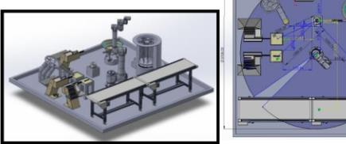
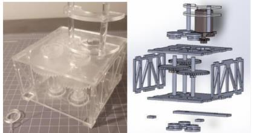

PROJECT MODULE 01

Lunar Dust Detection System
An ESP32-based lunar dust detector combining sensor electronics, custom PCBs, mechanical enclosures and a web interface.
View project →PROJECT MODULE 02

Hand-Eye Coordination
Machine vision and robot I/O integration for a hand-eye coordination task.
View project →PROJECT MODULE 03

Robot Cell Assembly
A robot cell assembly with two original feeder designs and cycle-time verification.
View project →PROJECT MODULE 04

Pick and Place Mechatronics System
A SolidWorks-designed mechatronic system manufactured using my own 3D printer.
View project →PROJECT MODULE 05

Gearbox Project
A modelled, analysed and assembled acrylic gearbox that passed its demonstration.
View project →PROJECT MODULE 06

CPAP Mask in Creo
CPAP mask design with mould tooling, manufacturing simulation and engineering drawings.
View project →PROJECT MODULE 07

Arduino Portfolio and Project
Embedded electronics coursework and a group project using a range of inputs, outputs and storage devices.
View project →PROJECT MODULE 08

Electric Scooter Project
Collaborative scooter design with part models, assembly work, animations and analysis.
View project →PROJECT MODULE 09
CAD & 3D Printing
Mechanical design work spanning printed mechanisms, enclosures and manufactured parts.
View project →PROJECT MODULE 10
Control Systems
Coursework involving root locus, transfer functions, PID and magnetic levitation.
View project →